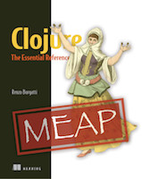

Parallel all the way
Shall we add a ‘p’?
Clojure eXchange 2018 - Renzo Borgatti - @reborg
About @reborg
- Software Engineer, www.droit.tech
- Of course we’re hiring!
- Organiser of the Papers We Love Meetup
- Clojure Pills on YouTube
- AKA Mr. “About to finish a book…”
When are you done with the book?

- “Clojure: The Essential Reference” by Manning
- 800+ pages, ~1500 hours of work.
- 42% discount with “ssborgatti”.
- Content complete by XMas 2018 :)
Context
- Circa 2007-2008
- CPU top speed achieved
- Increasing number of cores
- Push to leverage multiple cores
- FP, The Return
Clojure Parallelism
- Comes with a set of parallel APIs
pmap,pvalues,pcalls(lazy-sequential-chunked)reducers/fold(work-stealing fork-join)- Build your own with
future,agent, etc. core.asyncpipelines (external lib)
All nice stuff but
- Low level
- Not necessarily easy to use
- Even more to use correctly
- And what about stateful transducers?
- Dependency on chunk size
Thinking it differently
- Task oriented
- Predictable
- Easy to use
- Like the standard library …
🤔

Principles
- Modelling standard library functions
- Drop-in replacement (if possible)
- Transducers support
- New functions on top
- Well documented, benchmarked, tested.
Current Line-up 1/4
| Name | Description |
|---|---|
p/let |
Parallel let binding. |
p/slurp |
Parallel slurping files. |
p/do |
Parallel do forms. |
p/doto |
Parallel doto forms. |
p/count |
Transducer-aware parallel core/count. |
Current Line-up 2/4
| Name | Description |
|---|---|
p/frequencies |
Parallel core/frequencies |
p/group-by |
Parallel core/group-by |
p/update-vals |
Updates vals in a map parallel. |
p/sort |
Parallel core/sort. |
p/external-sort |
Memory efficient, file-based, parallel merge-sort. |
Current Line-up 3/4
| Name | Description |
|---|---|
p/fold |
Transducer-aware r/fold. |
p/transduce |
transduce based on p/fold. |
p/process-folder |
Process files in parallel. |
p/min and p/max |
Parallel core/min and core/max. |
p/distinct |
Parallel core/distinct |
Current Line-up 4/4
| Name | Description |
|---|---|
p/amap |
Parallel array transformation. |
p/armap |
Parallel array reversal transformation. |
xf/interleave |
core/interleave, transducer version. |
xf/pmap |
core/pmap, transducer version. |
xf/identity |
Alternative identity transducer |
Quick REPL
Last.FM dataset
- Something more challenging.
- Interesting large data set.
- Play counts for 360k users (1.5G, 1.7M lines tsv)
- Detailed plays for 1k users (2.4G, 1.9M lines tsv)
- User demographics
Approaching the problem
- Laziness: load and process to reduce the dataset.
- Transients: create and return the initial collection.
- Transducers: avoid unnecessary sequence wrapping.
- Careful with eager functions (frequencies, sort, etc.)
- All the best practices and tricks I know!
More Demo
Gotchas #1
- There is definitely hope!
- Hide away complexity
- Parallel is semantically different
- “drop-ins” are just a few
Gotchas #2
- Not suitable for trivial computations
- Or small collections
- Nesting (Or how not to)
- Go mutable as an option
- Always use a profiler!
The Future
- More functions!
- Seamless integration sequential/parallel
- Reading large inputs in parallel (no splits)
- More lifting to files (sort, distinct, etc.)
- GPU? ClojureScript?
Resources
- https://github.com/reborg/parallel the library
- A Java fork-join framework paper by Doug Lea
- Clojure Applied book contains chapters dedicated to Transducers with core.async pipelines examples.
- Clojure Essential Reference, Chapter 7 Reducers and Transducers